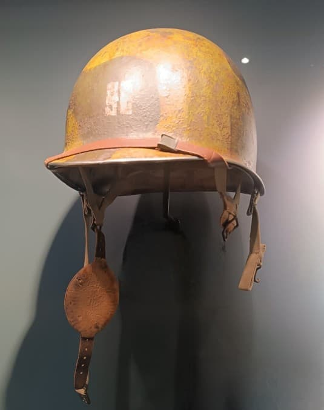

Le casque US M1 Paratrooper est la version spécialement conçue pour les troupes aéroportées américaines durant la Seconde Guerre mondiale. Basé sur la coque du M1 standard, il reçoit une jugulaire renforcée et un coussinet de menton en cuir afin de garantir une stabilité maximale lors des sauts.
Il est porté par les parachutistes de la 82nd Airborne et de la 101st Airborne en Normandie, en Hollande (Market Garden) et dans les Ardennes.

Visuellement proche du M1 standard, le casque Paratrooper se distingue par son système de jugulaire en cuir renforcé et son coussinet circulaire. Ces éléments permettent au casque de rester parfaitement en place lors de l’ouverture du parachute et des chocs à l’atterrissage.
Le casque Paratrooper est associé aux grandes opérations aéroportées alliées : Normandie (6 juin 1944), Market Garden (septembre 1944) et la bataille des Ardennes. Il incarne l’image du parachutiste américain de la Seconde Guerre mondiale.